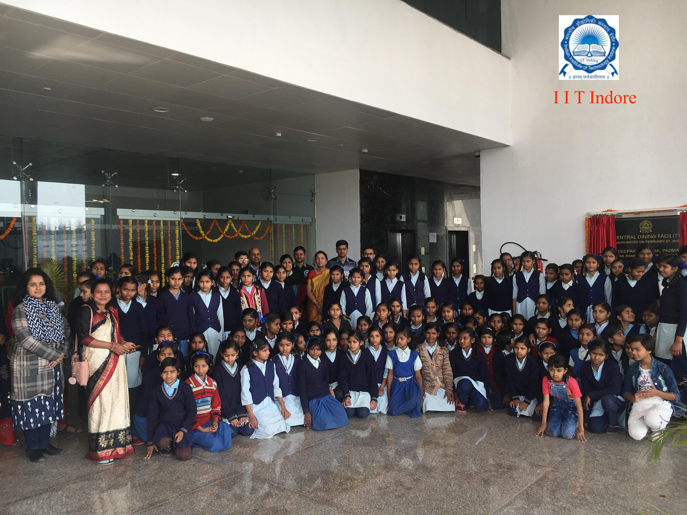
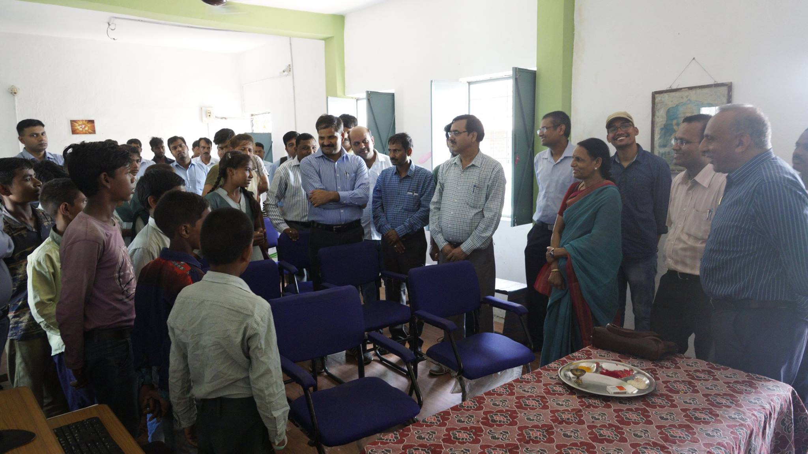
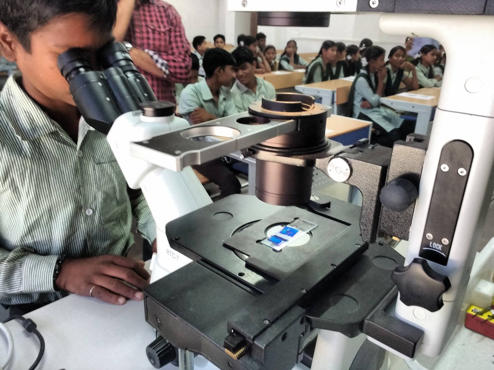
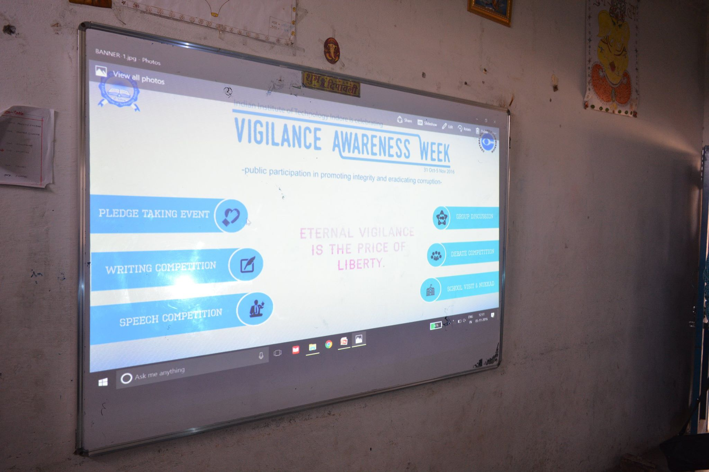

17, February 2020
IIT Indore 10th Anniversary : Essay Writing Competition- As part of the Foundation Day Celebrations,the institute is organizing an Essay Writing Competition among all Indore Region Schools.
7, February 2020
Visits of Students and Teachers @ IIT Indore - See details
26, January 2019
Independance day Celebrations- at Govt school Simrol.
24, June 2017
Inauguration of ‘Center of Excellence in Computer Education’ at Simrol Government School by Director Sir. 
14, November 2016
Children’s day Celebrations- conducted a biology session with the help of BSBE students for the students of Simrol Govt. School 
5, November 2016
Vigilance awareness week organized at Govt. school Simrol 
17, September 2016
Computer awareness training programmed(one day) for Govt. school Simrol. See details